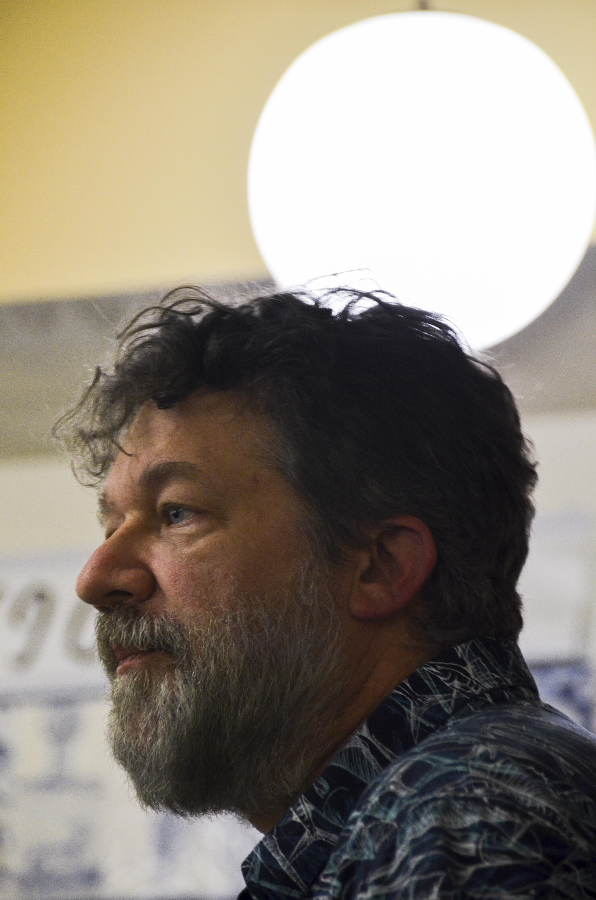
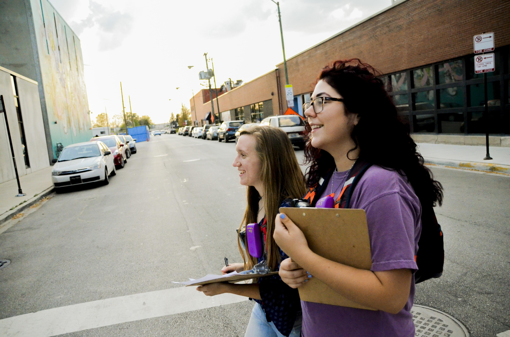
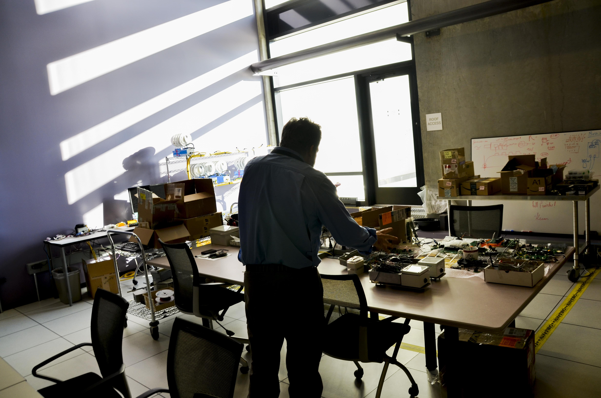

It's called "the nursery." A half-dozen white-domed machines lie on racks in a high-ceilinged room at Argonne National Laboratory, just half an hour west of the city. With the low, winter-afternoon sun hitting them just right, it's not a stretch to imagine them as eggs warming in an incubator.
The little plastic nodes are packed with sensors and backed by millions in federal funding. Eventually, they'll make their way out to lampposts in Chicago or Detroit or Denver or beyond to quietly measure the world around them. They'll look for traffic patterns, and they'll measure sound. The microwave-sized nodes will count particles in the air, they'll note the amount of carbon monoxide, sulfur dioxide and other pollutants present. They'll measure vibration, magnetic fields, and light. If all goes according to plan, the nodes will send this information and more back to a database where scientists, city officials, hacktavists and community members will be able to access and analyze the streams of hyperlocal data.
This is the vision of the Array of Things (AoT), a joint initiative between Argonne and the University of Chicago, in partnership with the City of Chicago and various technology firms. AoT expects to start publishing data from its preliminary nodes in February, at which point they hope to have a hundred of them up around the city quietly quantifying the traffic, noise and emissions that make city living, at best, unpleasant, and, at worst, environmentally unjust.
AoT is an early foray into an urban-design revolution based on the principle that massive amounts of new data can help identify and repair any number of urban woes. It places Chicago at the epicenter of a global "Smart-City" revolution. Metropolises across the globe seek to adopt AoT or technology like it, hoping that a smarter, more connected, and more analyzed city means a cleaner, safer, and less-congested one.
Cities are entering "a fourth stage of modern transformational change," according to a February 2016 White House report on urban technology. The first came about with the steam engine, the second with the power grid, and the third was made possible by reliable mass transit. Now, according to the report, "new physical and digital technologies" offer innovative solutions to 21st-century problems.
"Information and communication technologies, the proliferation of sensors through the Internet of Things, and converging data standards are ... combining to provide new possibilities for the physical management and the socioeconomic development of cities," the report reads. "Local governments are looking to data and analytics technologies for insight and are creating pilot projects to test ways to improve their services."
There's a lot of buzz around the idea of the smart city, but it can sometimes feel reductive, as if something as complex as urban poverty can be understood as a sequence of ones and zeroes. Technology companies frequently oversell their hardware and software, as if an algorithm might fill all Chicago's potholes once and for all. Chicago has a long history of failed utopian schemes, from the late 19th century's City Beautiful movement to the high-rise public-housing projects of the mid 20th century. On its face, AoT stirs up some of the same old urban-design tensions while introducing the uniquely 21st-century concerns of data security and digital privacy.
It might explain why Charlie Catlett, AoT's project lead and a senior computer scientist at Argonne, is a little wary of the "smart city" label.
"Our idea of a 'smart city' was more, let's see if we can equip people who are making decisions and operating the city to do it better," Catlett says. "When I think about the Array of Things and 'smart cities,' I don't think about the overall design of a smart city so much as: we can just pick off one problem at a time and, at the end, we're going to be improving the city. If we never become 'smart,' at least we'll be smarter than we are now."
In other words, the smart city is not a silver bullet, even if it's sometimes billed as one. But if AoT works out as Catlett hopes it will, a developer might use the data to build an app to warn asthma sufferers of nearby irritants. Or local activists might use air-particle levels to make the case for restrictions on diesel traffic. Or the city – armed with reams of new data – might better understand how a bus route change downtown affects traffic flow.
"Once you have a number of these deployed across the city, you begin to measure it in a way it hasn’t been measured before," Catlett says.
✶ ✶ ✶ ✶
If you stand on the corner of Damen Avenue and Cermak Road and squint up at the lamppost above the gas station, you can make out one of the 12 AoT nodes already deployed across Chicago. The Damen/Cermak node is part of a subset of nodes focused on "Urban Air Quality and Health Education," and it's pointed at a neighborhood that has a history of fighting for a cleaner environment.
Chicago's Pilsen and Little Village neighborhoods have been undergoing the slow, painful process of deindustrialization. With it comes the twin pangs of losing good-paying, local manufacturing jobs and a long-overdue reckconing with industry's toxic legacy. The blocks surrounding the Damen/Cermak node, in other words, are an excellent place to test one of AoT's core theses – namely, that when citizens and officials better understand their environment, they are better able to improve it.
In 2012, the nearby Fisk and Crawford coal power plants closed down after years of protests and community organizing by the Little Village Environmental Justice Organization (LVEJO), the Pilsen Environmental Rights and Reform Organization (PERRO), and others. The closings may have had as much to do with broader market forces and federal environmental regulations as it did with local activism, but they were considered an enormous environmental win nonetheless. Organizers leaned heavily on a 2002 Harvard School of Public Health study that literally put a number on how many deaths, emergency-room visits and asthma attacks the two plants caused each year.
"We inherently knew something was wrong ... but we couldn't prove anything," says Kim Wasserman, LVEJO's executive director. "It was finally getting those numbers that we were able to tell the story of how we were being impacted, outside of: 'My kid has asthma.' And it was those numbers that moved people to want to take action. There's nothing like having 40 body bags in the hallway of City Hall to really accentuate how we were being impacted."
The AoT nodes themselves won't go as far as to draw a link between poor air quality asthma attacks or fatalities, but the data they produce could empower more scientists to make those kinds of analyses. If successful, AoT might multiply exponentially this kind of quantitative awareness, giving neighborhoods access to all kinds of data that could confirm or deny suspicions about the air they breathe. Instead of just a dozen or so air monitors scattered sporadically across the city, AoT nodes will be logging air-quality data in neighborhoods that have historically suffered from high levels of asthma but have lacked the mechanisms for connecting it to specific environmental factors.
"Data is power," Wasserman says. "When you are putting out things like the Array of Things you are crossing into very unknown territory because what's going to happen when those results come out? Who is going to take responsibility for what is there?"
Wasserman and LVEJO – along with other community groups on the South Side – have already taken the matter into their own hands. The group is part of Shared Air, Shared Action, a 2016 grant from the US Environmental Protection Agency to explore how community groups and local residents might use increasingly affordable sensor technology to do their own air monitoring. For LVEJO, the current concern is diesel pollution, with high truck traffic in the area and proposals for new diesel-heavy industrial facilities.
Shared Air/Shared Action volunteers walk predetermined routes in their neighborhoods with boxy plastic air monitors strapped to their chests. They walk predetermined routes, looking for and noting anything that might add context to a sudden aberration in data – the passing of a smog-belching truck, say, or a particularly odorous barbecue nearby. They send their observations and the data back to a centralized database for scientists at the University of Illinois at Chicago and Kansas State University to analyze. It's all a bit like traditional, shoe-leather neighborhood canvassing, except that instead of drumming up votes, these engaged pedestrians are painting a portrait of their neighborhood's environmental health.
For Wasserman, getting community members directly involved like this creates a bottom-up approach to air monitoring in which those with the greatest human stake in the results are present in formulating and performing the experiment at hand. It's also, Wasserman notes, an opportunity to introduce questions of science, technology and engineering to communities that have traditionally lacked access to STEM education.
"A lot of times universities will make assumptions about the problem – and a lot of times they're right – but [they] will dictate how to solve that problem," she says. "If you want true partnership with community, then the community leads the request. The community leads the process. The community is the principal investigator."
✶ ✶ ✶ ✶
If the implicit benefit of cheap sensors and big data is greater knowledge, then the new technology's inherent risk is to information security and personal privacy. Every day we navigate a Brave New World in which reams of information about ourselves are beamed across networks in exchange for access or convenience. Not a month goes by without some new security breach, some new hack, that briefly makes us reconsider our tenuous faith in the gospel of the Cloud.
It's no wonder, then, that AoT has raised the eyebrows of privacy critics. After all, its aim, in the superficial sense, is to install hundreds of artificial ears, eyes and noses throughout public spaces. Initially, AoT had planned to include in the node a mechanism for counting nearby Bluetooth devices as a way to track pedestrian flow. When the Chicago Tribune published an article on it in 2014, it prompted a backlash of concern over exactly what data was being collected and who would control it. The feature was ultimately dropped, and AoT eventually published an Operating Policies document outlining their approach to privacy, but the genie was already out of the bottle. Chicagoans had gotten a whiff of Orwellian Big Brotherism, and it amplified a skepticism many already hold toward city government.
The final node design moved forward instead with a camera to count pedestrians and cars, and to detect street flooding. To guard against privacy intrusions, AoT relies on edge computing in which images are processed and analyzed right at the point of collection. In other words, according to AoT, the node extracts whatever quantitative information it needs, destroys the image, and just sends the information (e.g. number of cars) back to Argonne's database. For calibration purposes, less than 1 percent of images will randomly be stored. AoT insists they will not contain personally identifiable information, but they will be controlled and protected as if they do.
It begs a uniquely digital thought experiment: if a camera records a person in the city, but only a computer sees the image, is it a violation of personal privacy? Should Chicagoans have the ability to opt out of such collection, even if it is ultimately anonymous and limited to public spaces?
The scrutiny over AoT's camera is perhaps ironic given that there are literally thousands of public and private cameras throughout Chicago recording and storing our everyday acts – and doing so with far less oversight or scrutiny than is afforded AoT.
Catlett also stresses that the nodes are built and run on open-source hardware and software. The algorithm that decides what goes in your Facebook feed is a black box to which you will never have access. The algorithm that determines how the Damen/Cermak node measures carbon-monoxide levels is freely available online for anyone to inspect. Of course, for most of us, this will still be an indecipherable morass of computer code, but there's an active community of programmer activists who would be eager to inspect it and flag anything of concern.
In the Internet's early days, programmers were borderline fanatically devoted to transparency, decentralized power, and information-sharing. Much of that has original culture been lost in today's increasingly monopolized and centralized web. But Catlett enjoyed a front-row seat to the Internet's halcyon days, serving as chief technology officer at the National Center for Supercomputing Applications (NCSA) in the years following the release of Mosaic, the world wide web's first graphical browser.
✶ ✶ ✶ ✶
In a 2013 pamphlet called "Against the Smart City," urbanist Adam Greenfield makes a philosophical case against the digitization of our urban environments:
“[T]he wholesale surrender of municipal management to an algorithmic toolset ... would seem to repose an undue amount of trust in the party responsible for authoring the algorithm ... Inconvenient results may be suppressed, arbitrarily overridden by more heavily-weighted decision factors or simply ignored.”
All the more reason then for smart-city proponents to embrace the limited scope and open-source ethos that AoT purports to embrace. A good technologist is the first to admit that technology can only do so much.
"There’s no substitute for individuals and people coming together and advocating for things," says Derek Eder, founder of Chi Hack Night, a popular forum for hacktavists and concerned citizens. "Anybody who is trying to sell you the idea that civic technology is the big thing that will save the world … don’t listen to that person. That person is just trying to hype something or sell something."
“Data is
power.” – Kim Wasserman
power.” – Kim Wasserman
AoT's success or failure, then, relies on the degree to which it harnesses (or fails to harness) the messy human factor behind the computer's clean logic. To that end, AoT has partnered with the Smart Chicago Collaborative to do public outreach. To date, they have hosted three public meetings, all of which have been thoroughly documented online. An educational component dubbed the 'Lane of Things' has given students at Lane Tech High School a chance to try their hand in developing their own sensor packages. An engagement report posted online details the rest of AoT's outreach efforts.
More of this kind of connection to communities and the public may pop up once AoT begins actually publishing data, but, for now, meaningful, direct contributions to the core design of the system appear largely limited to scientists and city officials. The public meeting I attended in Humboldt Park in October was well-organized and informative, but didn't seem reflective of the kind of deep, sustained community connection one might hope to see in an initiative of this scale. Many of the attendees appeared to be somehow affiliated with AoT, the City or the Smart Chicago Collaborative. After a series of presentations, the first question out of the gate was from Daniel Kaberon, an interested Evanstonian who works in the IT sector, who asked why the AoT website wasn't being updated more frequently and why various goalposts set by the project had seemingly been delayed or abandoned.
"Is there a pulse? Is this dead?" Kaberon wondered aloud to me after the meeting. "I really want this thing to roll out – I really want this all to happen. I'm not negative about it, but, c'mon, tell us what's going on!"
At the time of writing, the Array of Things blog consists of just one entry, dated July 19.
In Catlett's defense, he and his team are computer scientists, not community organizers. When I asked him about these criticisms he acknowledged their validity, chalked them up to a lack of resources, and genuinely seemed to wish he could hire staff to directly work with community groups. It made me wonder why he even decided to stick his neck out and put AoT in the public spotlight in the way that he, Argonne, and the City have. After all, he likely could have approached this urban sensing project quietly, making it strictly and experiment by an for the scientific community alone.
"I don't want people to ever feel like we're sneaking up on them," he told me. "I would rather that people say to me 'I don't like what you're doing' than say 'I don't like what you did, and I don't like that you hid it from me.'"
✶ ✶ ✶ ✶
How Chicagoans respond to AoT when it finally launches will have wide implications for the future of technology not just in Pilsen or Litle Village or even the Chicagoland area. Over a hundred cities across the globe have inquired about adopting AoT, hoping, as Catlett hopes, that sexy sensing technology can help the powers that be better address the very unsexy problems that have long plagued urban life.
Algorithms and data are playing a larger and larger role in all aspects of our lives – how we work, who we love, and for whom we vote. Technology has always informed how cities are built, but in coming years, interconnected technology will quantify and digitize urban life in ways that feel strange and opaque to lay city-dwellers.
In the end, the fundamental tension is the same one that arises whenever any instrument is used to measure collective human experiences. Byron Sigcho, director of the Pilsen Alliance, put it to me like this:
"Research is only as good as it addresses the needs of the community. If it doesn’t, we have to ask, well, whom is that research for?"
Reporting for this story was made possible in part by a fellowship from Northwestern University's Social Justice News Nexus.